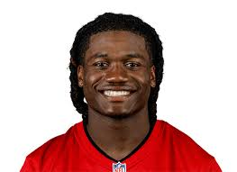

Home Page
Jayden Daniels has been impressive in his rookie season with the Washington Commanders. Through his first few games, he’s thrown for 2,819 yards and 15 touchdowns, averaging 261.8 passing yards per game. His performance has been solid, with an average of 20.1 completions per game. Daniels' ability to move the ball efficiently, both through the air and with his legs, has brought a dynamic edge to Washington’s offense. While still adjusting to the NFL, he's shown great promise and seems poised to continue developing into one of the league’s more exciting dual-threat quarterbacks. Fans and analysts alike are already noticing his poise in the pocket and his potential to become a long-term starter for the Commanders.

Bo Nix has been solid in his rookie year with the Denver Broncos. As of December 2024, he's thrown for 2,842 yards and 17 touchdowns, averaging 231.3 yards per game. Nix has looked comfortable in the pocket, completing 17.8 passes per game. While he's had his ups and downs as a rookie, his ability to make plays with both his arm and legs has been a bright spot for the Broncos’ offense. With Denver still fighting for a playoff spot, Nix’s development is crucial. He’s shown a lot of promise and could be a key piece for the team in the years to come if he continues to progress.

Bucky Irving has been a key contributor to the Tampa Bay Buccaneers' offense in the 2024 season. As of mid-season, Irving has rushed for 732 yards and scored 6 touchdowns, averaging 171.7 yards per game. His impressive 14.3 yards per carry highlights his explosive speed and big-play potential. The Buccaneers have relied on his ability to break off long runs and keep opposing defenses on their toes. While still in his rookie season, Irving has already shown that he can handle the NFL's physicality, and his unique playmaking ability has made him a standout in Tampa Bay’s backfield.
Bucky Irving has been a key contributor to the Tampa Bay Buccaneers' offense in the 2024 season. As of mid-season, Irving has rushed for 732 yards and scored 6 touchdowns, averaging 171.7 yards per game. His impressive 14.3 yards per carry highlights his explosive speed and big-play potential. The Buccaneers have relied on his ability to break off long runs and keep opposing defenses on their toes. While still in his rookie season, Irving has already shown that he can handle the NFL's physicality, and his unique playmaking ability has made him a standout in Tampa Bay’s backfield.